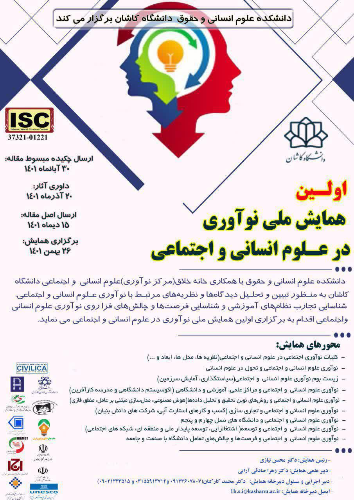
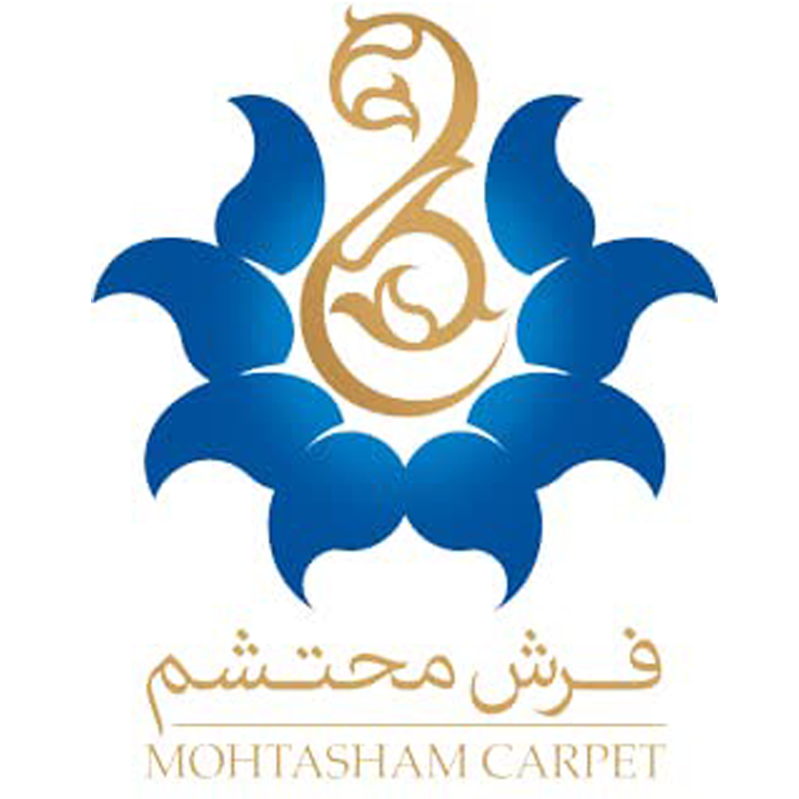
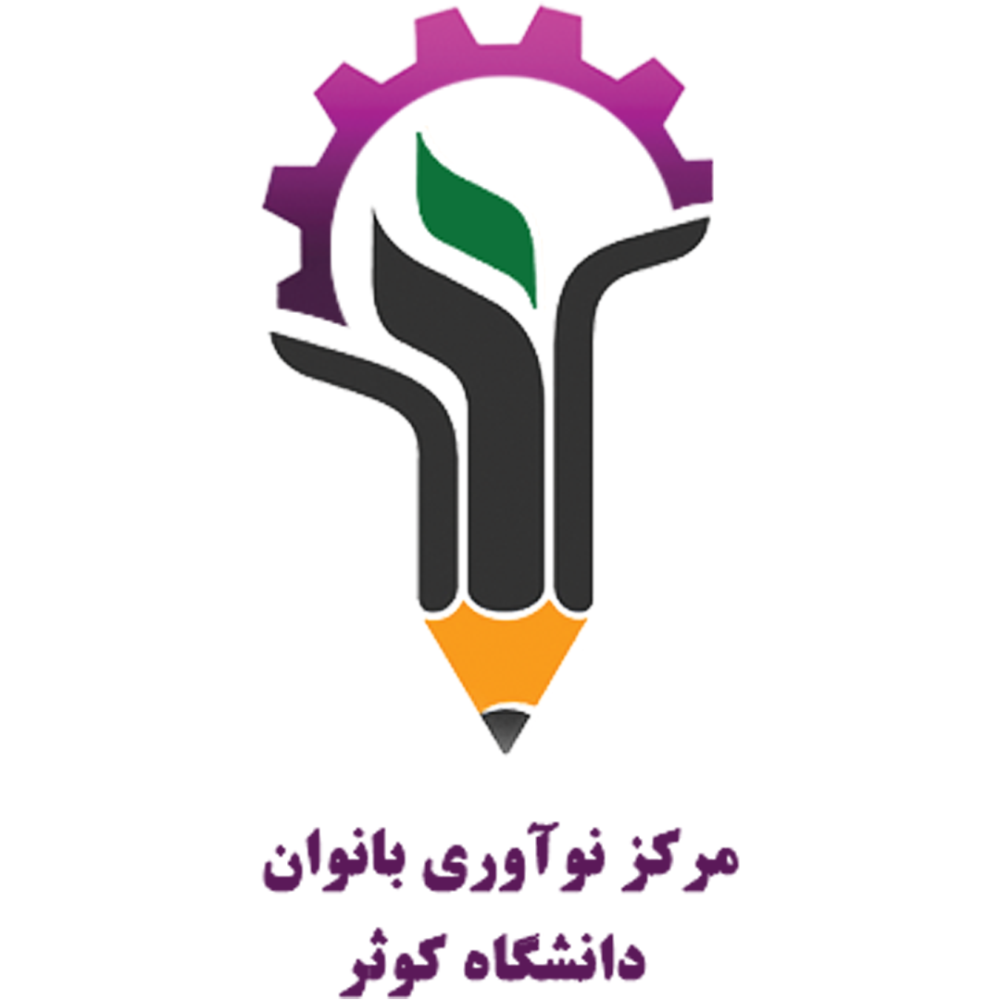
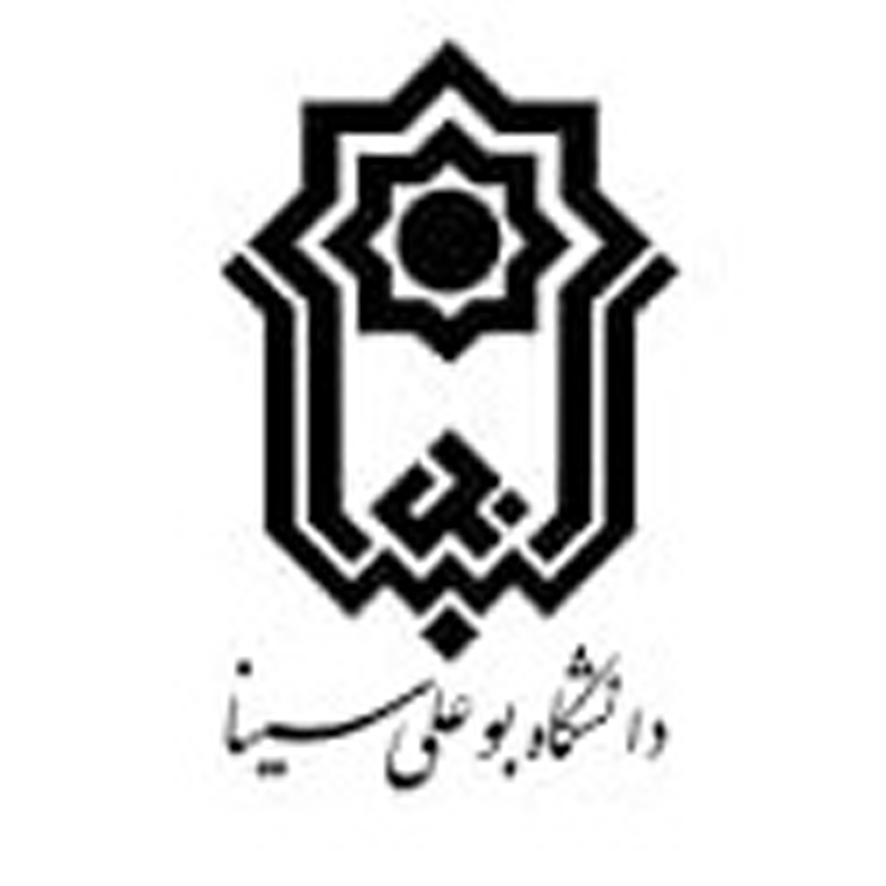
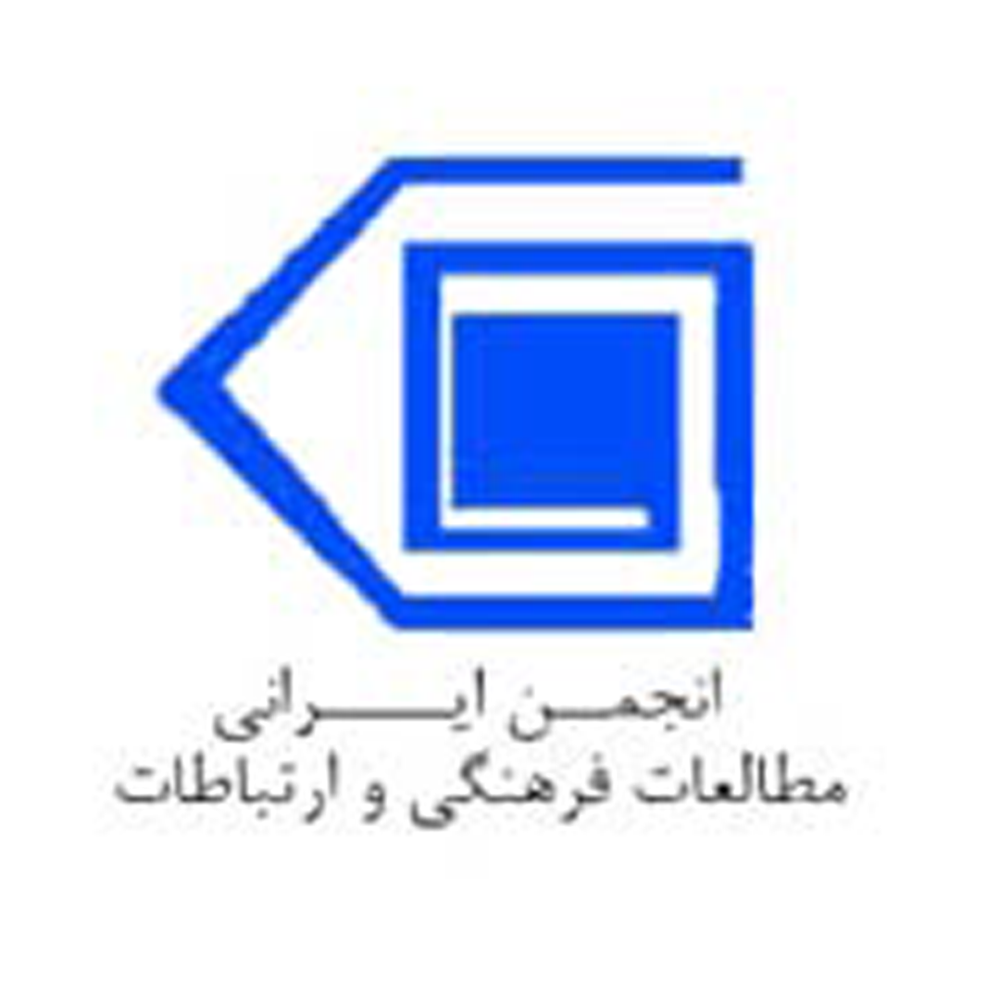
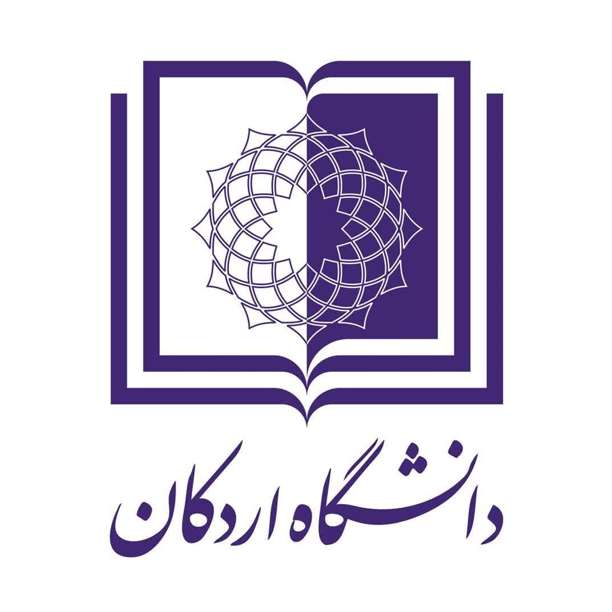

درباره ی کنفرانس
با توجه با استقبال زیاد دانشگاهیان ، فرهنگیان و دانشجویان تحصیلات تکمیلی فرصت ارایه چکیده مبسوط مقاله تا ۲۵اذرماه و اصل مقالات تا ۱۵ دیماه تمدید شد.
با توجه با استقبال زیاد دانشگاهیان ، فرهنگیان و دانشجویان تحصیلات تکمیلی فرصت ارایه چکیده مبسوط مقاله تا ۲۵اذرماه و اصل مقالات تا ۱۵ دیماه تمدید شد.
دانشکده علوم انسانی و حقوق دانشگاه کاشان برگزار می کند:
اولین همایش ملی نوآوری در علوم انسانی و اجتماعیعلوم انسانی و حقوق با همکاری خانه خلاق (مرکز نوآوری) علوم انسانی و اجتماعی دانشگاه کاشان به منظور تبیین و تحلیل دیدگاهها و نظریه های مرتبط با نوآوری علوم انسانی و اجتماعی، شناسایی تجارب نظام های آموزشی و شناسایی فرصت ها و چالش های فراروی نوآوری علوم انسانی و اجتماعی اقدام به برگزاری اولین "همایش ملی نوآوری در علوم انسانی و اجتماعی" می نماید.

برخی از موضوعات مورد علاقه شامل موضوعات زیر است:
کلیات نوآوری اجتماعی در علوم انسانی و اجتماعی (نظریه ها، مدل ها، ابعاد و ...
نوآوری علوم انسانی و اجتماعی و تحول در علوم انسانی
زیست بوم نوآوری علوم انسانی و اجتماعی (سیاستگذاری در سازمان ها و بنگاه ها، آمایش سرزمین)
نوآوری علوم انسانی و اجتماعی و روش های نوین تحقیق و تحلیل دادهها (هوش مصنوعی، مدلسازی مبتنی بر عامل، منطق فازی)
نوآوری علوم انسانی و اجتماعی و تجاری سازی (کسب و کارهای استارت آپی، شرکت های دانش بنیان) ، منطق فازی)
نوآوری علوم انسانی و اجتماعی و دانشگاه های نسل چهارم و پنجم
نوآوری علوم انسانی و اجتماعی و فرصت ها و چالش های تعامل دانشگاه با صنعت و جامعه
- 
- 
- 
- 
-

- 
کمیته علمی همایش
- دکتر عباس کتابی (رییس دانشگاه کاشان)
- دکتر محسن نیازی (عضو هیأت علمی گروه جامعه شناسی دانشگاه کاشان و رییس همایش)
- دکتر مهدی شبانی نوش آبادی (معاون پژوهشی و ارتباطات علمی دانشگاه کاشان)
- دکتر زهرا صادقی آرانی (عضو هیأت علمی گروه مدیریت دانشگاه کاشان و دبیر علمی همایش)
- دکتر پرویز کرمی (رییس ستاد فناوری های نرم و هویت ساز معاونت علمی و فناوری ریاست جمهوری)
- دکتر علی اکبر متکان (دبیر کل کمیسیون ملی یونسکو در ایران)
- دکتر مریم ملونی ( مدیرکل نوآوری و کسب و کار نوین معاونت علمی و فناوری ریاست جمهوری)
- دکتر سیده فاطمه حسینی (رییس کارگروه نوآوری اجتماعی معاونت علمی و فناوری ریاست جمهوری)
- دکتر سمانه یزدانی ( معاون بین الملل کمیسیون ملی یونسکو در ایران)
- دکتر محسن ایرانی رهقی (معاون نوآوری و اقتصادی دانشگاه کااشان)
- دکتر علی مبینی دهکردی (رییس سازمان توسعه و سرمایه گذاری و معاون دانشگاه تهران)
- دکتر جعفر هزار جریبی (استاد گروه تعاون و رفاه اجتماعی دانشگاه علامه طباطبایی)
- دکتر محمود جمعه پور (استاد گروه برنامه ریزی اجتماعی دانشگاه علامه طباطبایی)
- دکتر محمد نقی زاده (دانشیار گروه آموزشی مدیریت و کارآفرینی دانشگاه علامه طباطبایی)
- دکتر محمدرضا اخضریان کاشانی (عضو هیأت علمی دانشگاه تهران).
- دکتر سیداسماعیل مسعودی ( عضو هیأت علمی و رییس مرکز نواوری علوم انسانی دانشگاه شیراز)
- دکتر علی اصغر سعدآبادی آرانی (عضو هیأت علمی و رییس مرکز نوآوری علوم انسانی دانشگاه شهید بهشتی)
- سیدسروش قاضی نوری (مرکز تحقیقات سیاست علمی کشور و سردبیر مجله رهیافت)
- سیدسپهر قاضی نوری (عضو هیأت علمی سازمان پژوهش های علمی و صنعتی ایران)
- دکتر سمیه کریم زاده (مرکز تحقیقات سیاست علمی کشور)
- دکتر سحر کوثری (معاون پژوهشی و فناوری مرکز تحقیقات سیاست علمی کشور)
- دکتر عباس زراعت (عضو هیأت علمی گروه حقوق دانشگاه کاشان)
- دکتر محمد امینی (عضو هیأت علمی گروه علوم تربیتی دانشگاه کاشان)
- دکتر سیدکمال الدین موسوی (عضو هیأت علمی گروه علوم اجتماعی دانشگاه کاشان)
- دکتر مهران سهراب زاده (عضو هیأت علمی گروه علوم اجتماعی دانشگاه کاشان)
- دکتر اسدا... بابایی فرد (عضو هیأت علمی گروه علوم اجتماعی دانشگاه کاشان)
- دکتر محمد گنجی (عضو هیأت علمی گروه علوم اجتماعی دانشگاه کاشان)
- دکتر نرگس نیکخواه قمصری (عضو هیأت علمی گروه علوم اجتماعی دانشگاه کاشان)
- دکتر الهام شفایی مقدم (عضو هیأت علمی گروه علوم اجتماعی دانشگاه کاشان)
- دکتر سیداحمد مدنی (عضو هیأت علمی گروه علوم تربیتی دانشگاه کاشان)
- دکتر زینب السادات اطهری (عضو هیأت علمی گروه علوم تربیتی دانشگاه کاشان)
- دکتر محمدرضا تمنایی فر (عضو هیأت علمی گروه روانشناسی دانشگاه کاشان)
- دکتر علی یزدخواستی (عضو هیأت علمی گروه علوم تربیتی دانشگاه کاشان)
- دکتر کیوان شریف مرادی (عضو هیأت علمی گروه علوم ورزشی دانشگاه کاشان)
- دکتر حمیدرضا رحیمی (عضو هیأت علمی گروه علوم تربیتی دانشگاه کاشان)
- دکتر فریبرز صدیقی ارفعی (عضو هیأت علمی گروه روانشناسی دانشگاه کاشان)
- دکتر علی فرهادیان (عضو هیأت علمی و رییس دانشکده علوم مالی، مدیریت و کارآفرینی دانشگاه کاشان)
- دکتر اسماعیل مزروعی (عضو هیأت علمی گروه مدیریت دانشگاه کاشان)
- دکتر سیدعبدالجابر قدرتیان (عضو هیأت علمی گروه مدیریت دانشگاه کاشان)
- دکتر محمود شاطریان (عضو هیأت علمی گروه حقوق دانشگاه کاشان)
- دکتر سعید قماشی (عضو هیأت علمی گروه حقوق دانشگاه کاشان)
- دکتر مسجدسرایی (عضو هیأت علمی گروه حقوق دانشگاه کاشان)
- دکتر نوید بابایی (عضو هیأت علمی گروه حقوق دانشگاه کاشان)
- دکتر رضا نوری مفرد (عضو هیأت علمی گروه علوم ورزشی دانشگاه کاشان)
- دکتر امیر قنبرپور نصرتی (عضو هیأت علمی گروه علوم ورزشی دانشگاه کاشان)
- دکتر فاطمه کاظمی نسب (عضو هیأت علمی گروه علوم ورزشی دانشگاه کاشان)
- دکتر موسی خلفی (عضو هیأت علمی گروه علوم ورزشی دانشگاه کاشان)
- دکتر مجید صدوقی (عضو هیأت علمی گروه روانشناسی دانشگاه کاشان)
- دکتر اصغر جعفری (عضو هیأت علمی گروه روانشناسی دانشگاه کاشان)
- دکتر مسعود کیانی (عضو هیأت علمی گروه روانشناسی دانشگاه کاشان)
- دکتر امید آزاد (عضو هیأت علمی گروه زبان و ادبیات انگلیسی مجتمع آموزش عالی گناباد)
- آقای دکتر محمدجواد پوروقار (عضو هیأت علمی گروه علوم ورزشی دانشگاه کاشان)
- آقای دکتر محمد ابراهیم بهرام (دکتری علوم ورزشی)
- دکتر محمد کارکنان نصرآبادی (دانش آموخته دانشگاه علامه طباطبایی و دبیر اجرایی همایش)
زمان بندی کنفرانس
ارسال چکیده مبسوط مقاله
25 آذرماه 1401 چکیده - 15 دی ماه مقاله کامل
لطفا مقالات خود را به نشانی ایمیل رویداد ارسال کنید.
25 آذرماه 1401 چکیده - 15 دی ماه مقاله کامل
لطفا مقالات خود را به نشانی ایمیل رویداد ارسال کنید.
داوری آثار
2520آذر ماه 1401
2520آذر ماه 1401
ارسال اصل مقالات
15 دی ماه 1401
15 دی ماه 1401
برگزازس همایش
26 بهمن ماه 1401
26 بهمن ماه 1401